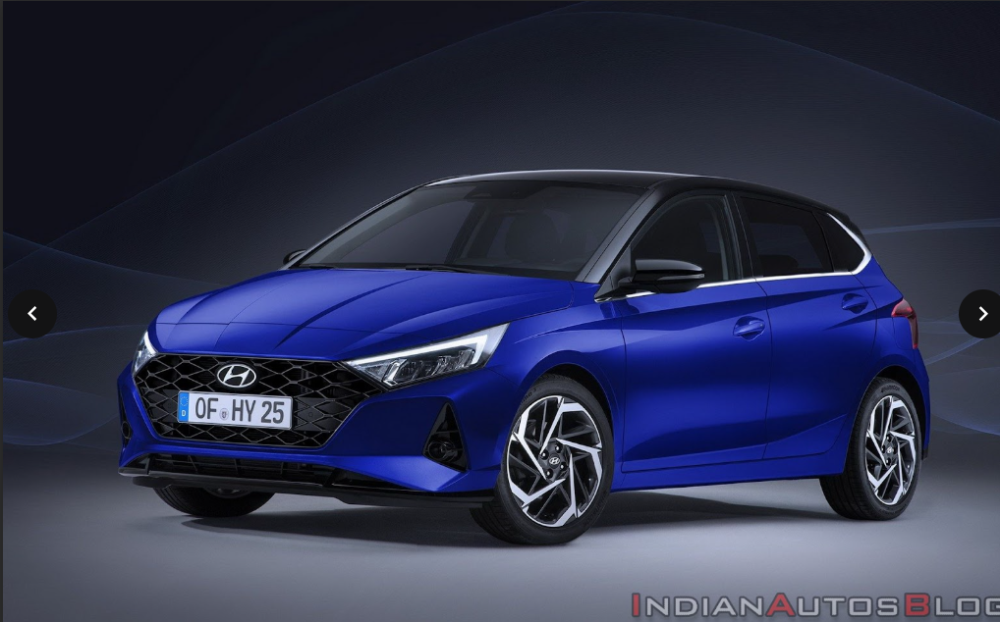

This is a description of Hyundai-i20.

The Hyundai i20 uses a completely new platform that was created at Hyundai's European technical centre in Rüsselsheim to allow Hyundai to move into Europe's highly competitive subcompact B segment. A 2,525 mm (99.4 in) wheelbase helps endow the i20 with a generous passenger cabin. Suspension follows the supermini norm of MacPherson struts at the front and a torsion beam rear end, with rack and pinion steering.